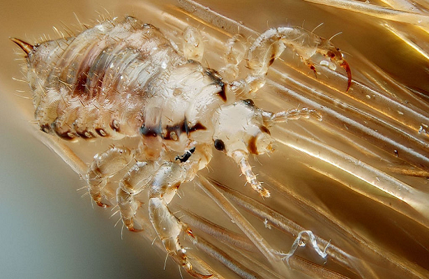

Quais os melhores tratamentos contra piolhos?
30/06/2022 19h16 - Atualizado 23/06/2022 19h16
Piolhos fazem pessoas se coçarem há milhares de anos. Eles aparecem na Bíblia, se espalharam durante o Império Romano, causaram epidemias de tifo, ilustram diversas pinturas do século 17 e oferecem até pistas de como viviam múmias de quase 2 mil anos.
Tentativas de acabar com os piolhos humanos (Pediculus humanus) também começaram lá atrás. Foram usados pó de crisântemo, papoula, artemísia, óleo de cedro, pomada mercurial, pomada de enxofre e banha, além de outros exemplos bastante tóxicos e perigosos.
Hoje, há tratamentos seguros e eficazes para acabar com piolhos, que têm se tornado mais resistentes aos tratamentos tradicionais. Em geral, é possível usar remédios como cremes ou loções com inseticidas piretróides, sabonetes criados para combater piolhos, uso de pente fino todos os dias e uma receita caseira com água e vinagre (misturados na mesma quantidade) para retirar os ovos.
Mas há alguns desafios envolvidos para evitar que eles acabem voltando logo depois, já que uma fêmea adulta pode gerar centenas de piolhos em um mês. Isso porque os piolhos podem aparecer em fases diferentes ao mesmo tempo: ovos (lêndeas) e os piolhos adultos.
Às vezes, é preciso adotar um tratamento diferente para cada uma dessas fases diferentes. Por exemplo, uma aplicação do remédio para matar os piolhos, pente fino para tirar os ovos e as lêndeas, e uma nova aplicação do remédio. Mas médicos dermatologistas afirmam que cabe somente aos profissionais de saúde especializados definir qual é o tratamento correto para cada caso.
As pessoas mais afetadas pelos piolhos costumam ser crianças de 3 a 11 anos que frequentam escolas, principalmente as meninas — pelo hábito de, em geral, usarem cabelos mais longos —, explica a médica Vania Oliveira de Carvalho, presidente do departamento científico de dermatologia da Sociedade Brasileira de Pediatria (SBP).
É possível prevenir a transmissão com medidas como evitar compartilhar objetos (como pentes, chapéus e toalhas) ou tratar corretamente todas as pessoas afetadas do entorno. E diferentemente do que diz o senso comum, a presença de piolhos não tem ligação com a falta de higiene. Pelo contrário, o inseto prefere cabelos limpos, afirma a Fiocruz. Além do incômodo, do risco de infecções secundárias (por bactérias) e de anemia por causa de piolhos, essa doença também gera problemas de sociabilidade, estigma, estresse e preconceito.
Como o piolho humano vive e se reproduz
Os cientistas estimam que existam quase 3 mil espécies de piolho, mas apenas três delas afetam os humanos. Uma delas afeta o couro cabeludo (pediculose da cabeça), outra atinge o corpo (pediculose do corpo, conhecida como muquirana) e outra a região pubiana (pediculose do púbis, conhecida como chato, que afeta os pelos próximos ao pênis ou à vagina).
Estima-se que elas tenham surgido há milhares de anos, quando os piolhos humanos se separaram dos piolhos que afetam os chimpanzés. Os piolhos humanos foram identificados e nomeados em 1758 pelo explorador e botânico sueco Carl Linnaeus, considerado o pai da taxonomia (parte da biologia que se dedica a identificar, classificar e nomear os seres vivos).
Esses insetos afetam pessoas de todas as rendas e de praticamente todos os países do mundo. E ninguém está imune: eles afetam crianças, adultos e idosos.
O piolho resiste bem à temperatura do ambiente (mas costuma ceder às temperaturas mais altas de secadores e "chapinhas"). Ele se gruda ao couro cabeludo para colocar seus ovos, que são fixados por uma substância grudenta, como uma cola, que solidifica o ovo no lugar.
Segundo cientistas, o piolho se alimenta do sangue humano (por isso a coceira) e se instala próximo ao couro cabeludo, por exemplo, porque as condições ambientais (como temperatura) são melhores para sua reprodução.
Normalmente, os piolhos "estão presentes em pequeno número, em geral menos de 10 piolhos vivos ao mesmo tempo no couro cabeludo, têm vida curta e podem não ser facilmente observados", diz Carvalho, da Sociedade Brasileira de Pediatria.
O ciclo de vida do piolho funciona mais ou menos assim: eles vivem em torno de um mês. Por dia, cada fêmea coloca quase 10 ovos, chamados de lêndeas. De 7 a 10 dias depois esses ovos darão origem às ninfas (piolho na fase inicial). De 9 a 12 dias depois, essas ninfas chegam à fase adulta, período em que podem acasalar e dar início ao ciclo de novo, explica a Fundação Oswaldo Cruz.
Ainda segundo a fundação, essa proliferação acontece mais no verão porque "quanto maior a temperatura, mais acelerado é o desenvolvimento do piolho dentro do ovo".
Como identificar as lêndeas? "São formações ovaladas (como um ovo), amareladas, aderidas firme e lateralmente na haste do cabelo. Quanto mais próxima da raiz dos cabelos maior será a probabilidade de ser uma lêndea da qual o piolho ainda irá sair", explica Carvalho.
A médica dermatologista Fabiane Andrade Mulinari Brenner, coordenadora do departamento de cabelos e unhas da Sociedade Brasileira de Dermatologia (SBD), afirma que "os piolhos ficam na cabeça, mas os ovos são colocados rente ao cabelo no caso de infestação do couro cabeludo. Por isso, à medida que o cabelo vai crescendo, esses ovos vão sendo vistos mais longe do couro cabeludo, como se fosse um colar de contas, um rosário no fio de cabelo".
Como tratar e acabar com o piolho?
O tratamento contra piolhos é indicado apenas para pessoas com infestação ativa.
Como dito no início do texto, há diversas formas de combater o piolho humano. A mais tradicional é usar um pente bem fino desde o couro cabeludo para retirar todas as larvas e todos os ovos.
A Fiocruz afirma que uma mistura de água com vinagre (com a mesma quantidade das duas substâncias) pode ajudar a combater os piolhos e não é tóxica (ou seja, não faz mal à saúde). O vinagre aqui tem o papel de amolecer os ovos (ou lêndeas).
Segundo a Sociedade Brasileira de Dermatologia, deve-se colocar essas escovas de cabelos (e outros objetos contaminados) dentro da água por 10 minutos para matar o piolho.
Os tratamentos mais modernos incluem sabonetes, loções e outros tipos de remédios. Carvalho, da Sociedade Brasileira de Pediatria, afirma que o "ideal é procurar um médico pediatra que indicará o melhor tratamento para cada faixa etária".
Brenner, da Sociedade Brasileira de Dermatologia, explica que o uso de inseticidas como os piretróides sintéticos pode ser tóxico para crianças com menos de cinco anos. Por isso, os médicos podem requisitar formulações diferentes (com enxofre) para essa faixa etária.
Essa contaminação por remédio pode acontecer com crianças mais novas porque o couro cabeludo é muito grande em relação ao tamanho do corpo e o couro cabeludo "funciona como uma espécie de esponja que absorve o que é aplicado na cabeça", explica a Fiocruz.
Mas e no restante da população? O remédio mais comum é a permetrina.
Na maioria das vezes, o que a gente precisa de uma loção para tratar o couro cabeludo, você vai passar uma loção que precisa ficar umas 6 a 8 horas no couro cabeludo e ser lavada no dia seguinte", conta Brenner. "Não recomendo tratamentos de pouca duração, às vezes o sabonete e o shampoo acabam irritando o couro cabeludo, e não tratando adequadamente."
E como funciona o tratamento mais comum?
Quando se faz o tratamento, a gente já programa: você vai tratar pelo menos 3 dias, vai dar um intervalo de 7 dias e vai tratar de novo. Tecnicamente, esses inseticidas piretróides são larvicidas e ovicidas. Então, eles pegariam todas as formas do piolho, mas na prática a gente muitas vezes vê recidiva (ressurgimento da doença) se você fizer tratamento uma vez", explica Brenner, da Sociedade Brasileira de Dermatologia.
E acrescenta: "Às vezes, você trata o piolho e você ainda fica com a lêndea visível. Normalmente, a gente faz um tratamento para tratar esses piolhos que estão no couro cabeludo e repete o tratamento em 7 dias, para que aqueles ovos possam ser tratados com um novo tratamento."
Carvalho diz que atualmente há outros remédios que podem ser usados contra os piolhos, como a deltametrina e a dimeticona.
As especialistas entrevistadas pela BBC News Brasil alertam para os riscos graves à saúde de se usar soluções caseiras, plantas, tinturas e produtos para tratar parasitas em animais domésticos, além do uso de remédios sem orientação de profissionais de saúde.
Uma medida fundamental também é investigar se quem convive com a pessoa infectada também foi afetado, como familiares e colegas de escola, para evitar reinfecção.
"Existe uma justificativa epidemiológica para isso: ou porque a gente faz uma resistência imunológica (de defesa do corpo humano) ao piolho ou porque ele se dissemina historicamente. Então, você trata, vem um surto, você trata e às vezes passam 6 ou 8 anos sem surtos de pediculose. Isso vai diminuindo a imunidade e a atenção do médico, da escola e vem aí novamente um surto. Historicamente, há surtos de pediculose a cada 6 ou 8 anos, explica Brenner.
Quais são os sintomas de uma infestação de piolho?
O principal sintoma de uma pediculose é a coceira, que pode fazer com que as pessoas afetadas causem lesões na região afetada. Mas a doença pode ser descoberta também ao se notar presença do piolho ou da lêndea no couro cabeludo.
Brenner, da Sociedade Brasileira de Dermatologia, afirma que a coceira acontece nas regiões com mais vasos sanguíneos, como a nuca e o pescoço. Ela lista outros sintomas, como descamação do couro cabeludo, pontos brancos no cabelo e aparecimento de ínguas atrás das orelhas e na nuca.
Costuma ser mais fácil achar as lêndeas, que são os ovos (aqueles pontinhos brancos grudados nos fios de cabelo), do que o piolho em si, que percorre o couro cabeludo e se esconde entre os milhares de fios.
"Se os pais estão desconfiados, podem olhar cuidadosamente os cabelos à procura das lêndeas, ou passar um pente fino e observar se caem os piolhos em uma toalha branca, que ajuda a visualizar o agente", afirma Carvalho, da Sociedade Brasileira de Pediatria.
Quais são as causas do piolho e como preveni-lo?
Há duas maneiras fundamentais de se prevenir a infestação de piolho: evitar compartilhar objetos pessoais e analisar e tratar todas as pessoas que acabam se infectando.
Bonés, lenços, capacetes e chapéus, por exemplo, podem dificultar a contaminação de quem usa, mas podem também ajudar a espalhar piolhos se eles forem compartilhados com outras pessoas. Outros objetos podem colaborar com a transmissão, como pentes, travesseiros, prendedores de cabelo e toalhas, além do contato de uma cabeça com outra.
"Crianças brincam de uma forma muito próxima. Isso facilita a transmissão", explica Brenner, da Sociedade Brasileira de Dermatologia. Mas salões de beleza sem a higiene adequada podem também ajudar a transmissão de piolhos em adultos.
Vale lembrar que os piolhos não têm capacidade de voar nem de pular.
Carvalho, da Sociedade Brasileira de Pediatria, a maior forma de prevenção passa pelo tratamento de todos os infectados. "Campanhas nas escolas esclarecem que devem ser procuradas lêndeas no caso de coceira na cabeça. Avisar aos pais que há casos na escola ajudam a efetivar o tratamento de todos os casos, reduzindo assim, a contaminação."
E quais são as causas de uma infestação de piolho? A transmissão de uma pessoa para outra.
Especialistas lembram que não há qualquer relação com a higiene das pessoas, classe social ou hábitos. "Um mito histórico associa a pediculose (infestação de piolho) à baixa renda ou à promiscuidade, sem qualquer comprovação científica", afirma a Fiocruz.